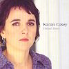

Celtic Lyrics Corner > Artists & Groups > Karan Casey > Distant Shore > Another Day
|  | Another Day |
| Credits : | Tim O Brien & Darell Scott |
| Appears On : | Distant Shore |
| Language : | English |
Lyrics :
This world is made with sweat and toil
Pushing muscle and elbow oil
We can't lie too long in the shade
'Cause everyday must be remade
Some days we fall, some days we fly
In the end we all must die
Our rotten flesh and broken bones
Will feed the ground that we call home
Will feed the ground that we call home
Chorus
:
A new sprout grows from a fallen tree
This song will go on after me
So lift your heart and dry your eyes
It's another day to live and die
Another day to live and die
I've run naked in the wild
Seen the beauty of a new born child
Like the alchemists of old
I've tried to spin my straw to gold
Most times a giver, sometimes a thief
So full of hope but prone to grief
And between freedom and despair
I know the truth is lying there
I know the truth is lying there
(Chorus)
Go on now, don't you worry about me
You've miles to go and a world to see
My life's been long and full and good
I've run this race the best I could
It's a short time here and a long apart
The same song rings in both our hearts
So take this guitar when I'm gone
Write your rhymes and pass it on
Write your rhymes and pass it on
A new sprout grows from a fallen tree
This song will go on after me
So lift your heart and dry your eyes
It's another day to live and die
(Chorus)